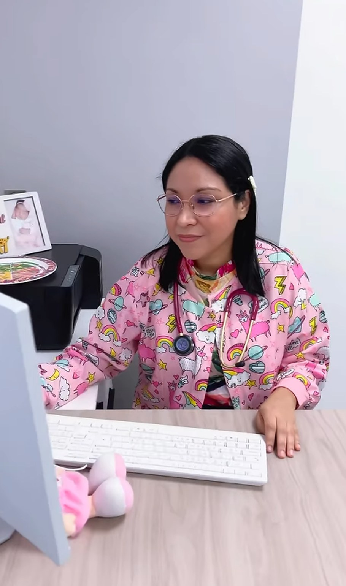
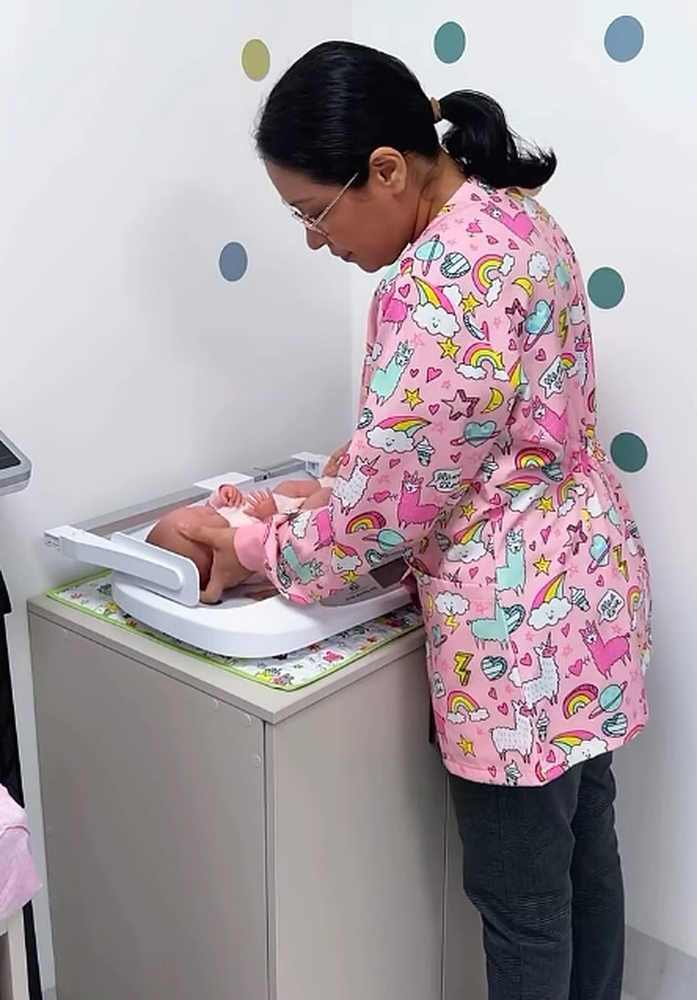
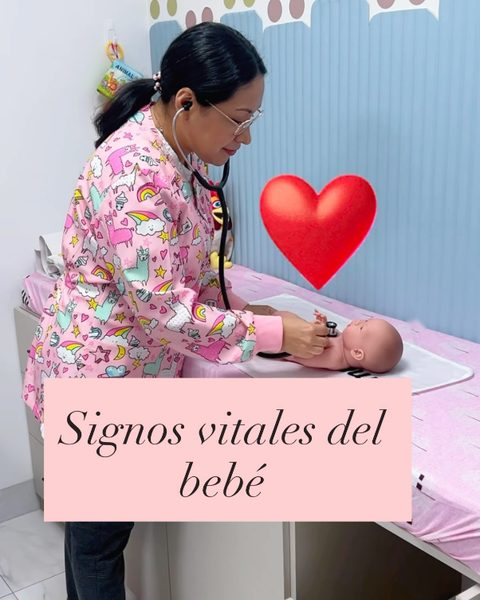
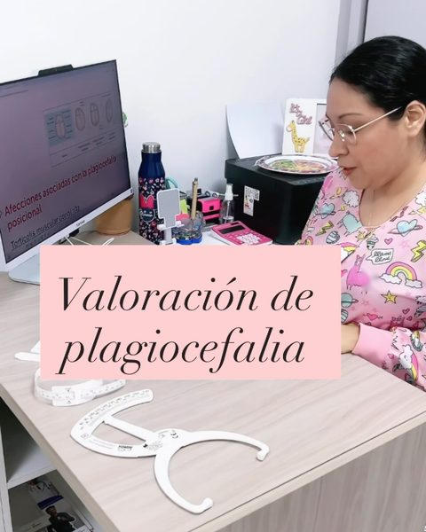
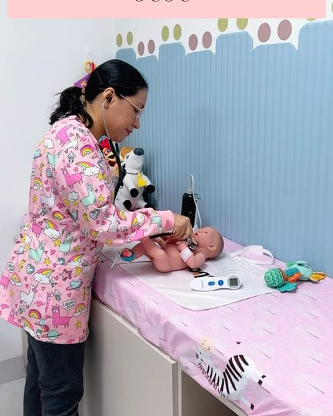
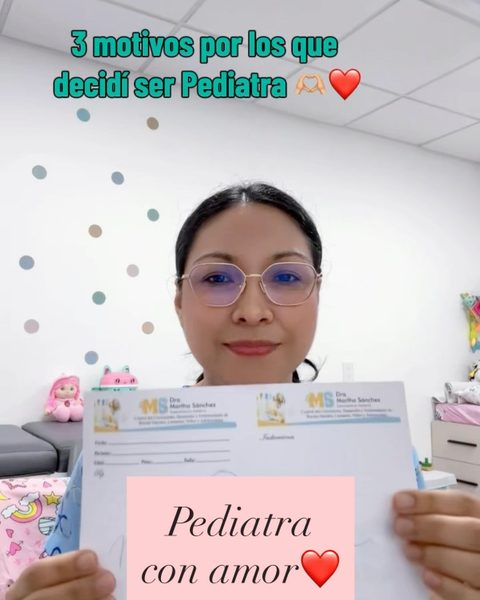

Consulta pediátrica integral
Valoración y seguimiento de la salud de tu hijo, desde el nacimiento hasta los 15 años.
AgendarConsulta pediátrica integral del nacimiento a los 15 años, vacunación y asesoría en lactancia y alimentación complementaria. En Guayaquil y por teleconsulta.

Cuidando la salud de su mayor tesoro

Una consulta con tiempo y buena explicación ayuda a resolverlas con calma. Agenda la tuya por WhatsApp.
Agendar consultaDel embarazo a la adolescencia: consulta, vacunas y asesorías para acompañar a tu familia. Desliza para verlos todos.
Valoración y seguimiento de la salud de tu hijo, desde el nacimiento hasta los 15 años.
AgendarAsesoría para iniciar y organizar la alimentación de tu bebé con seguridad.
AgendarPrepara la lactancia antes de que nazca tu bebé y llega con tus dudas resueltas.
AgendarAtención y orientación cuando tu niño se enferma, con explicaciones claras para la familia.
AgendarAsesoría desde casa para aclarar dudas sobre enfermedades de tu niño, alimentación y lactancia.
Agendar teleconsultaConsulta presencial en Guayaquil o teleconsulta.
La atención es previa cita. Son cuatro pasos y casi todo ocurre por WhatsApp.
Al 097 953 0787. Cuéntanos la edad de tu hijo y el motivo de la consulta.
Consulta presencial en el Edificio Ágora Medical Center, o teleconsulta desde casa.
De lunes a sábado, en horario de mañana (8:00 a 13:00) o tarde (14:00 a 18:00).
Resuelve tus dudas sobre la salud, la lactancia y la alimentación de tu niño, con calma.
Videos cortos, explicados con calma, sobre lo que más preguntan las familias en consulta. Toca cualquiera para verlo completo.

Signos vitales del bebéLos lactantes tienen su propio ritmo: qué valores son normales y por qué.Ver en Instagram
Valoración de plagiocefaliaCómo se mide la cabecita del bebé con protocolo, no “al ojo”.Ver en Instagram
La primera cita no espera al primer mesPor qué conviene llevar al recién nacido pronto al pediatra.Ver en Instagram
3 motivos por los que decidí ser pediatra“La mejor profesión que pude elegir”, en sus propias palabras.Ver en InstagramEspecialista en pediatría · Guayaquil, Ecuador
Atiende a recién nacidos, niños y adolescentes hasta los 15 años. También acompaña a las familias con asesoría en lactancia, incluida la prenatal, y en el inicio de la alimentación complementaria.
En su consulta y en sus videos de Instagram explica con calma y en lenguaje sencillo, para que cada familia se sienta segura al cuidar la salud de su mayor tesoro.
Se mantiene al día con las guías pediátricas vigentes, porque para ella la formación de su pediatra sí importa. Escúchala contarlo.
La consulta pediátrica integral cubre desde el nacimiento hasta los 15 años.
Ambas. Puedes venir al consultorio, en el Edificio Ágora Medical Center de Guayaquil, o tener una teleconsulta desde casa.
Es una asesoría para aclarar tus dudas sobre enfermedades de tu niño y recibir orientación en alimentación y lactancia, entre otros temas.
Sí. La atención es previa cita, de lunes a sábado de 8:00 a 13:00 y de 14:00 a 18:00.
Escribe por WhatsApp al 097 953 0787 o completa el formulario al final de esta página: se abrirá un chat con tu mensaje listo para enviar.
Elige el formato que mejor se adapte a tu familia. Siempre previa cita.
Consultorio: Edificio Ágora Medical Center, Guayaquil
Horario: lunes a sábado, 8:00 a 13:00 y 14:00 a 18:00
Para qué sirve: aclarar dudas sobre enfermedades de tu niño y recibir asesoría en alimentación y lactancia.
Cómo pedirla: por WhatsApp, al 097 953 0787
Completa los datos y se abrirá WhatsApp con tu mensaje listo. La doctora o su equipo te confirmarán el horario.
Dra. Martha SánchezAtención previa cita, de lunes a sábado.